PSP-UD2 · RA2
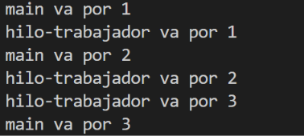
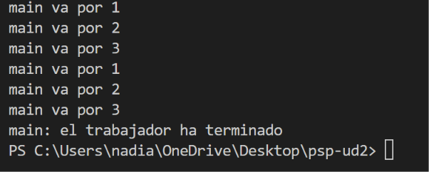
Con start() hay dos hilos trabajando a la vez.
main va por 1, hilo-trabajador va por 1, main va por 2…start() pone en marcha el hilo-trabajador, que ejecuta la tarea mientras main ejecuta la suya con tarea.run().Con run() solo trabaja main.
main va por 1, 2, 3, dos veces.run() no crea ningún hilo. Es una llamada a un método normal, y la ejecuta quien la escribe: main.join() vuelve al momento y el mensaje main: el trabajador ha terminado no es cierto.Conclusión: start() crea un hilo nuevo que ejecuta la tarea en paralelo; run() solo ejecuta la tarea en el hilo que ya está corriendo.
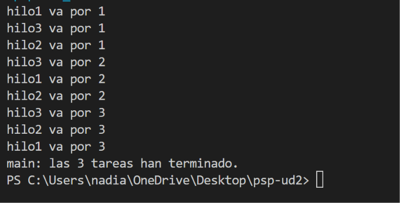
Portátil de 4 núcleos, con el equipo en reposo.
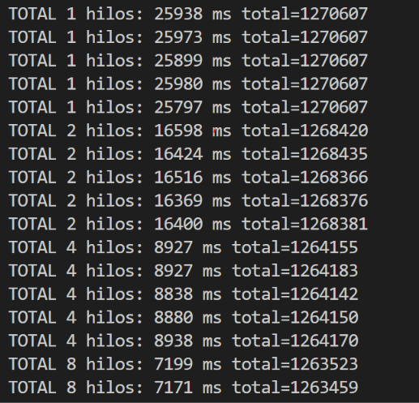
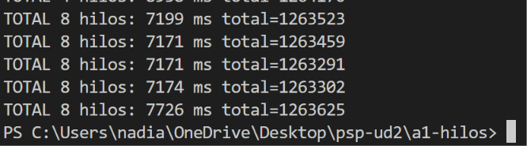
| N hilos | Pasadas (ms) | Mediana (ms) | total en la mediana | Primos que faltan |
|---|---|---|---|---|
| 1 | 25938 · 25973 · 25899 · 25980 · 25797 | 25938 | 1270607 | 0 |
| 2 | 16598 · 16424 · 16516 · 16369 · 16400 | 16424 | 1268435 | 2172 |
| 4 | 8927 · 8927 · 8838 · 8880 · 8938 | 8927 | 1264155 | 6452 |
| 8 | 7199 · 7171 · 7171 · 7174 · 7726 | 7174 | 1263302 | 7305 |
| N | Procesos UD1 · mediana (ms) | Hilos · mediana (ms) | Hilos · total de primos |
|---|---|---|---|
| 1 | 28010 | 25938 | 1270607 |
| 2 | 17473 | 16424 | 1268435 |
| 4 | 10698 | 8927 | 1264155 |
| 8 | 10585 | 7174 | 1263302 |
java PrimosHilos.java N, para N = 1, 2, 4 y 8.Arranca antes el reparto entre hilos. Crear un hilo es barato porque vive dentro del mismo proceso y comparte su memoria; un proceso tiene que arrancar una JVM nueva. Se ve con N=1: 25.938 ms con hilos frente a 28.010 ms con procesos.
Escalan mejor los hilos: con 4 mejoran 2,91x (procesos 2,62x) y con 8 mejoran 3,62x (procesos 2,65x, prácticamente igual que con 4, porque 8 JVM compiten por 4 núcleos y la memoria). Pero los hilos dan un total incorrecto (con 8 faltan 7.305 primos), así que de momento son más rápidos dando un resultado que está mal.
Porque los trozos tienen la misma cantidad de números, pero no el mismo trabajo. esPrimo(x) prueba divisores hasta la raíz de x: con los números pequeños del trozo 0 termina enseguida, y con los números grandes del último trozo (cerca de 20.000.000) tiene que probar muchos más. Repartir el rango en partes iguales no reparte la carga por igual: el trozo 0 acaba pronto y su núcleo se queda sin nada que hacer, mientras el último sigue trabajando, y es ese trozo el que marca el tiempo total.
Thread.sleep(args.length > 0 ? Long.parseLong(args[0]) : 3000); //Actividad 1.4 Paso 16 limpiador.interrupt(); //tras dejar correrlo 3s lo interrumpimos limpiador.join(); //lo esperamos.
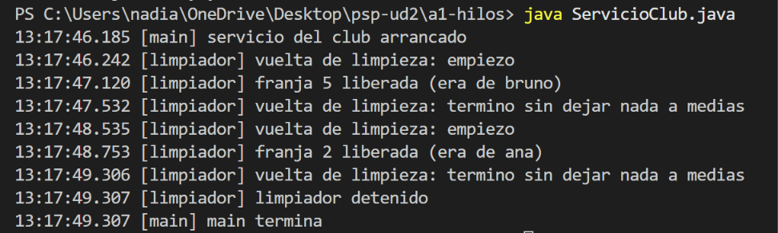
| Operación del club | A qué espera | Grupo | ¿Lleva hilo? ¿Por qué? |
|---|---|---|---|
| Comprobar si una franja está libre | A nada: es leer una posición de memoria | Instantánea | No. No espera a nada; el hilo costaría más que la operación. |
| Liberar las franjas caducadas cada segundo | Al reloj | Espera mucho | Sí. Espera al reloj; duerme en segundo plano sin bloquear el servicio. |
| Enviar el correo de confirmación de una reserva | A un servidor de correo | Espera mucho | Sí. Espera al servidor de correo; así el usuario no espera con él. |
| Calcular cuántos primos hay en el rango común | A nada: es CPU pura, pero se trocea | Calcula mucho | Sí. CPU pura: se reparte entre hilos, uno por núcleo. |
| Formatear la fecha de una reserva para la pantalla | A nada: microsegundos | Instantánea | No. Microsegundos; no espera a nada. |
| Escribir el registro del día en un fichero | Al disco | Espera mucho | Sí. Espera al disco; el servicio sigue mientras se escribe. |
Comprobar si una franja está libre
join() para saber la respuesta.franja[] agrava la carrera de la sección crítica.Formatear la fecha de una reserva para la pantalla
El contador incrementado 2 millones de veces: 2.000.000.
Cada vez: las 1.000 veces.
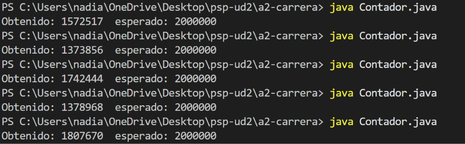
Salen distintos porque contador++ no es una sola operación, son tres pasos:
contador.contador.Los dos hilos ejecutan estos pasos a la vez y pueden mezclarse: si los dos leen el mismo valor antes de que el otro escriba, los dos escriben el mismo resultado y se pierde un incremento. Cuántas veces pasa depende de cómo reparta el sistema operativo el procesador entre los hilos, que cambia en cada ejecución. Por eso cada vez se pierden incrementos distintos y el número final es diferente.
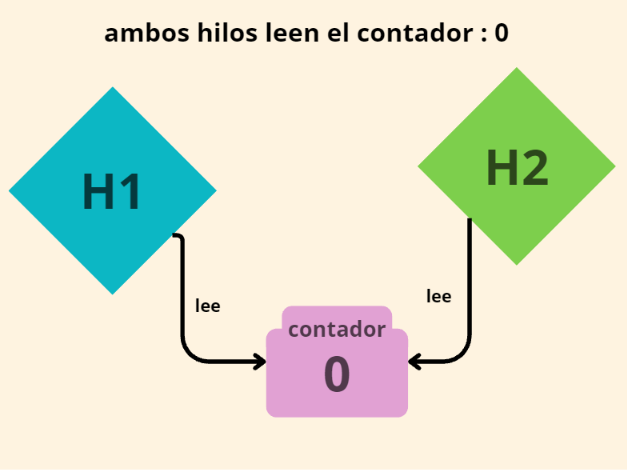
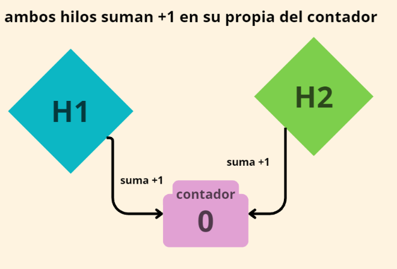
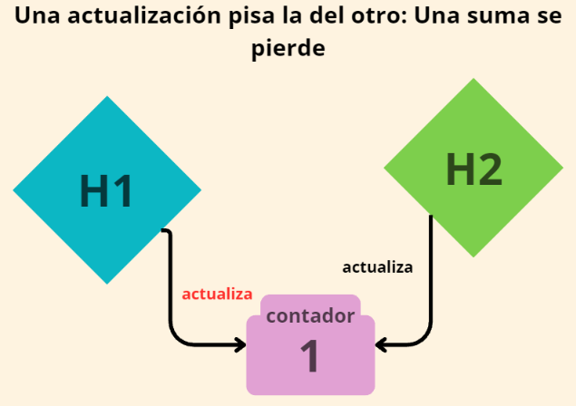
| N hilos | total | Primos perdidos |
|---|---|---|
| 1 | 1270607 | 0 |
| 2 | 1268435 | 2172 |
| 4 | 1264155 | 6452 |
| 8 | 1263302 | 7305 |
Con 2 hilos se perdieron 2.172 primos, con 4 se perdieron 6.452 y con 8 se perdieron 7.305 (frente a los 1.270.607 que da con 1 hilo).
Con un solo hilo no se pierde ninguno porque nadie más toca total: ese hilo lee, suma y escribe sin que otro se meta en medio. Con varios hilos, todos hacen total++ sobre la misma variable compartida, y cuando dos leen el mismo valor a la vez, uno de los incrementos se pisa. Cuantos más hilos, más veces coinciden y más primos se pierden.
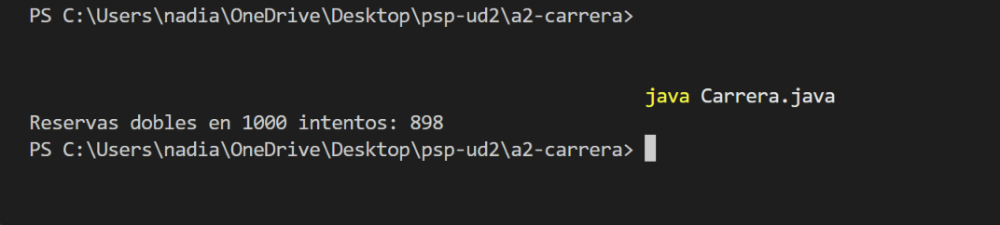
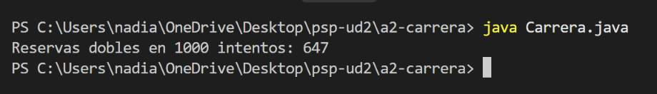
Con yield: 898 dobles de 1000. Sin yield: 647 dobles de 1000.
El fallo está en los dos casos. El yield() no lo crea: solo ensancha el hueco entre comprobar y actuar, y por eso con él salen más dobles. Sin yield el hueco sigue existiendo, es más estrecho, pero aun así se confirmaron dos reservas 647 veces de 1000. Que sea menos probable no significa que no pase: con mil usuarios reservando de verdad, un fallo poco probable acaba pasando seguro.
static boolean reservar(int id, String quien) {
long t0 = System.nanoTime();
// SECCIÓN CRÍTICA: empieza aquí
if (franja[id] == null) { // 1 · comprobar
franja[id] = quien; // 2 · actuar
caduca[id] = System.currentTimeMillis() + 900_000; // quince minutos para pagar
// SECCIÓN CRÍTICA: acaba aquí
long t1 = System.nanoTime();
traza("seccion critica de reservar: " + (t1 - t0) / 1000.0 + " microsegundos");
return true;
}
return false;
}
Lo que queda dentro de la sección crítica tarda 1,4 microsegundos:
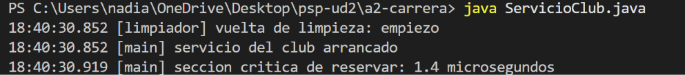
| Método | Qué toca | ¿Sección crítica? |
|---|---|---|
reservar(franja, usuario) | Escribe el ocupante de una franja | Sí |
cancelar(franja) | Borra el ocupante de una franja | Sí |
limpiar() (el limpiador de la actividad 1) | Libera las franjas caducadas | Sí |
estaLibre(franja) | Solo lee | No |
informeDelDia() | Recorre las seis franjas y las cuenta | Sí |
1,4 microsegundos.
Estado compartido: los arrays franja[] (quién ocupa cada franja) y caduca[] (cuándo caduca cada reserva). Son static: una sola copia para todos los hilos.
Métodos que lo tocan: reservar, cancelar, limpiar e informeDelDia.
Qué pasa si dos hilos entran a la vez: en reservar, los dos comprueban franja[id] == null antes de que ninguno escriba, los dos ven la franja libre y los dos reservan. Dos usuarios reciben «Reserva confirmada» para el mismo barco. No sale ningún error.
Los tres números que lo demuestran:
yield, 647 de 1000 sin él.C
private static final Object CERROJO = new Object();
static final AtomicReference<String> franja = new AtomicReference<>();
static final ConcurrentHashMap<Integer,String> mapa = new ConcurrentHashMap<>();
// Versión A · bloqueo
static void reservarA(String quien) {
synchronized(CERROJO)
{
if (usuario == null) { // 1 · comprobar
Thread.yield(); // 2 · la ventana, ensanchada a propósito
usuario = quien; // 3 · actuar
confirmadas++;
}
}
}
// Versión B · atómica
static void reservarB(String quien) {
if(franja.compareAndSet(null, quien))
{
confirmadas++;
}
}
// Versión C · colección concurrente
static void reservarC(String quien) {
if(mapa.putIfAbsent(1, quien)==null)
{
confirmadas++;
}
}
// La que parece correcta y no lo es: get + put
static void reservarMal(String quien) {
if (mapa.get(1) == null)
{
Thread.yield();
mapa.put(1, quien);
confirmadas++;
}
}
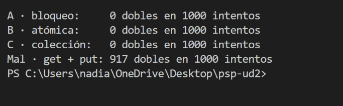
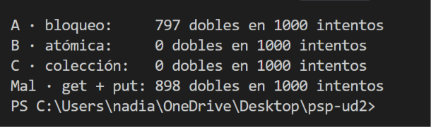
A la versión A (bloqueo): sin el synchronized dio 797 dobles en 1000 intentos.